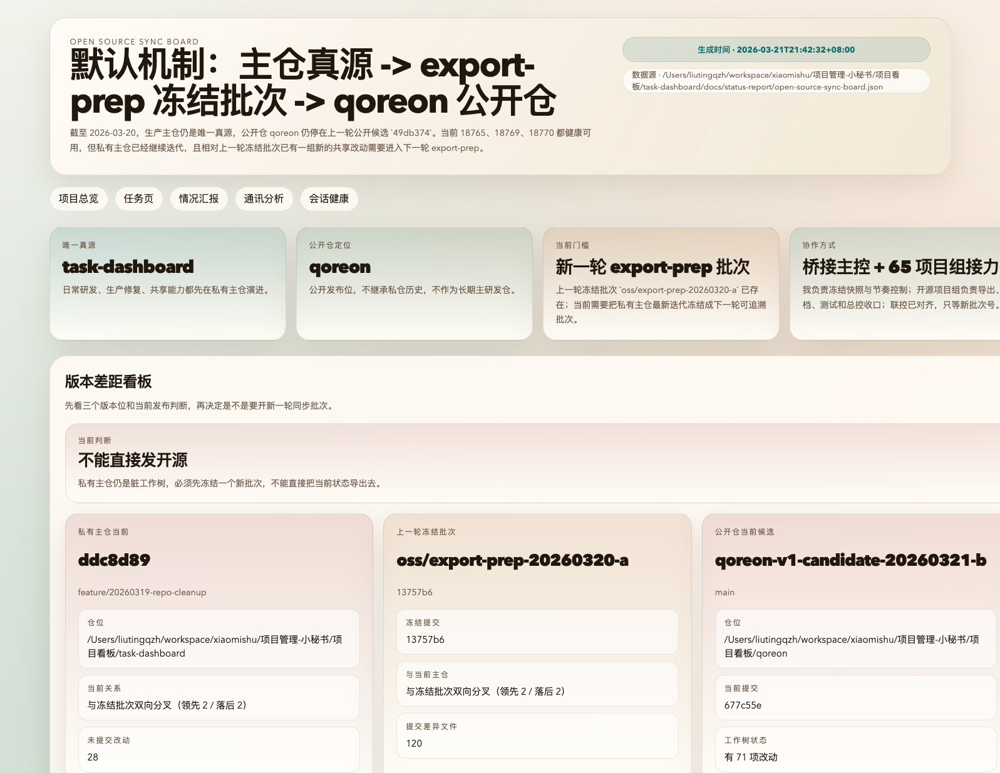
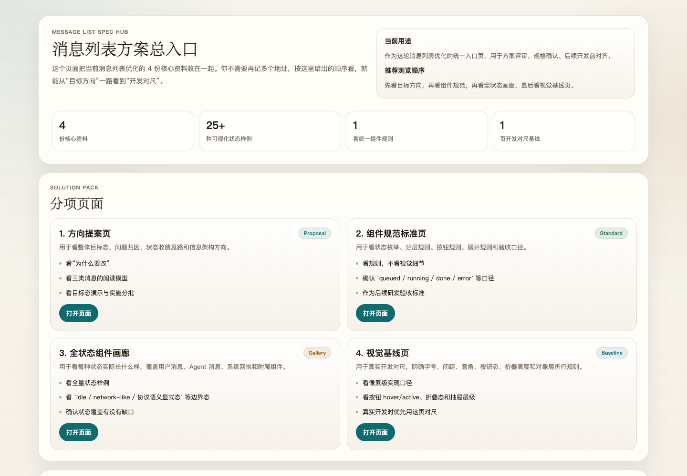
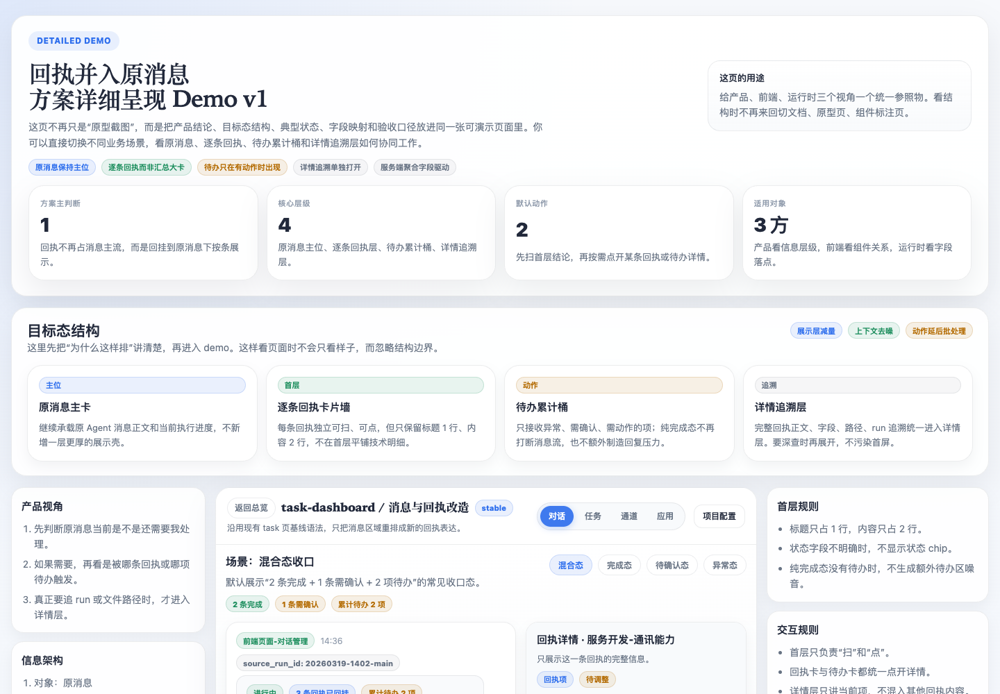

项目 01
内部主工程
这里是真正每天还在继续开发、修问题、改页面的地方。所有共享能力先在这里演进，不直接拿“当前目录”对外发。
这页直接讲一件最近真实发生过的事：内部主工程还在继续开发，另一个项目开始整理对外版本，最后再把结果交到对外仓库。左边是事情怎么一步步推进的，右边是每一步在系统里具体用了什么功能。
简单说，就是把内部还在变化的工程内容，整理成一版能发给外部试用的版本。难点不在“发出去”，而在于别让入口变乱、别让任务分散、别让最后的结果收不回来。
一个地方继续开发，一个地方负责整理对外版本，最后一个地方负责把结果交给外部人。它们不是三个重复目录，而是三段不同职责的工作现场。
大家可能会在不同地方同时推进，但最后如果说不清这件事该在哪儿收口、结果该回给谁，协作就会变成表面热闹。
不是所有人都在同一个项目里说话。先把这三个地方和几个关键角色讲清楚，后面故事才不会看乱。
这里是真正每天还在继续开发、修问题、改页面的地方。所有共享能力先在这里演进，不直接拿“当前目录”对外发。
这是台前的工作台。对外版本这条线的任务、消息、回执和最终收口，都应该回到这里，而不是分散在多个地方。
这是外部人最后看到的版本。它不是研发现场，也不承接所有内部历史，只接收整理过、验收过的对外版本结果。
负责看整轮协作是否能继续往前走，最后能不能收口，不替代所有执行工作。
负责把内部主工程里的变化有边界地交给开源执行项目，保证消息和结果都能回到正确的人那里。
分别负责公开边界、外部说明、最小启动链与放行前检查。它们不是重复劳动，而是三段不同的接力。
下面五幕是同一个故事，不是五个案例。右侧卡片会把这一幕在系统里对应的功能点和动作翻译出来。
这次事情一开始暴露的问题，其实很日常：大家一度不知道该在哪个项目里继续干活。和对外版本有关的事，原先分散在台前工作台和后台筹备区两个地方。短期看起来都能用，但一旦人多起来，谁接任务、谁收口、结果到底算在哪儿，就开始变得含糊。
团队先做的不是导仓，也不是补说明，而是先把入口收成一个。台前只留一个真正承担日常推进的开源执行项目；后台那边退回去，只保留宿主、留痕和迁移支持职责，不再继续承担日常派发。从那一刻开始，大家终于不用再反复确认“这件事到底该在哪儿说”。

这张看板不是装饰图，它正好对应这次协作里“入口、阶段、责任归属”被重新收清楚后的状态。
入口收清楚之后，第二个问题也很快摆到桌面上：内部主工程还在继续变化。有人在修页面，有人在补脚本，还有人继续压结构。如果这时候直接把当前工作目录拿出去，外部看到的就不是一个整理过的版本，而是一片仍在施工的现场。
于是负责仓库同步的那位 Agent 很快把规则卡死：不能直接拿当前工作树外发，必须先固定这一版要对外发的内容。这个动作把“哪个目录看起来比较新”变成了“这一版到底包含什么、后面所有整理都围着谁来做”。
等这一版要对外发的范围固定下来以后，开源执行项目里很快分成了几条并行线：一条盯公开边界，一条盯文档和示例，一条盯测试和最小启动链。每个人干的都不是“大而全”的工作，而是一段非常具体的工作。
这时候多 Agent 协作的价值就出来了。真正需要补信息时，不是等人来回传话，而是 Agent 之间直接发消息、带回执要求去推进。于是每条线都知道自己的输入是什么、输出要交给谁，忙，但是不乱。

这类界面负责承接“谁去找谁、这条消息要不要回执、结果最后回给谁”。不是所有沟通都要人手工来回转述。
做到这里，最容易出现一种错觉：页面已经有了，说明也补了，示例项目看上去也能用了，好像这件事已经差不多了。但团队很清楚，内部人看着顺手，不等于外部第一次拿到时也能走通。
所以测试与验收那条线在这里特别关键。它关心的不是“像不像完成了”，而是最现实的几个问题：初始化路径能不能跑通、最小示例能不能用、一条基本协作链能不能走完、失败时别人能不能知道卡在哪里。到这一步，这件事才从“内部已经理解的成果”，变成“外部也能接住的产品”。
最后真正让这轮协作成立的，不是每条线都交了一点东西，而是这些结果重新回到了一个统一的地方。有人交回导出和脱敏结论，有人交回文档和示例状态，有人交回测试结果，最后由开源执行项目里的总控来判断：这一版对外版本能不能成立，还差哪一块，下一步该谁继续动。
这也是这次故事最想说明的一点：多项目协作不是“多开几个项目、多放几个 Agent”就自动成立。它成立的前提是，入口清楚，边界清楚，结果回得来。

这类回执让结果不是散落在多个对话里，而是能重新汇回发起方，形成真正可以继续消费的结论。
它真正让人看到的是：Qoreon 不是让多个 Agent 同时说话，而是让多个项目、多条线、多段结果最后还能重新被组织起来。
写作依据来自最近这轮真实的开源同步与执行材料，包括同步看板、开源管理沉淀、桥接职责和公开仓初始化口径。
docs/status-report/open-source-sync-board.jsondocs/status-report/open-source-sync-board.jsondocs/public/release-draft-v1-candidate.mdexamples/standard-project/tasks/主体-总控/产出物/沉淀/03-标准项目通讯录与分工表.md